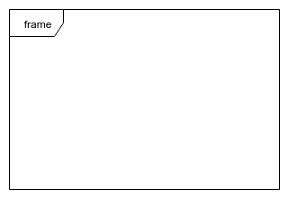
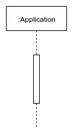
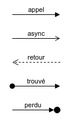

A sequence diagram describes an Interaction by focusing on the sequence of Messages that are exchanged, along with their corresponding OccurrenceSpecifications on the Lifelines.
- Object Management Group
Un diagramme de séquence est un diagramme qui représente la séquence de messages entre les objets au cours d'une interaction.
- Wikipedia
| Nom | Représentation | Description |
|---|---|---|
| Frame |  | Elément optionel permettant d'identifier un diagramme par son label. |
| Lifeline |  |
Représente un participant au diagramme de séquence. Des éléments Execution Specification ou Activation Bar permettent d'identifier les actions. |
| Nom | Représentation | Description |
|---|---|---|
| Message |  | Permet de définir les intéractions entre les différents participants. |